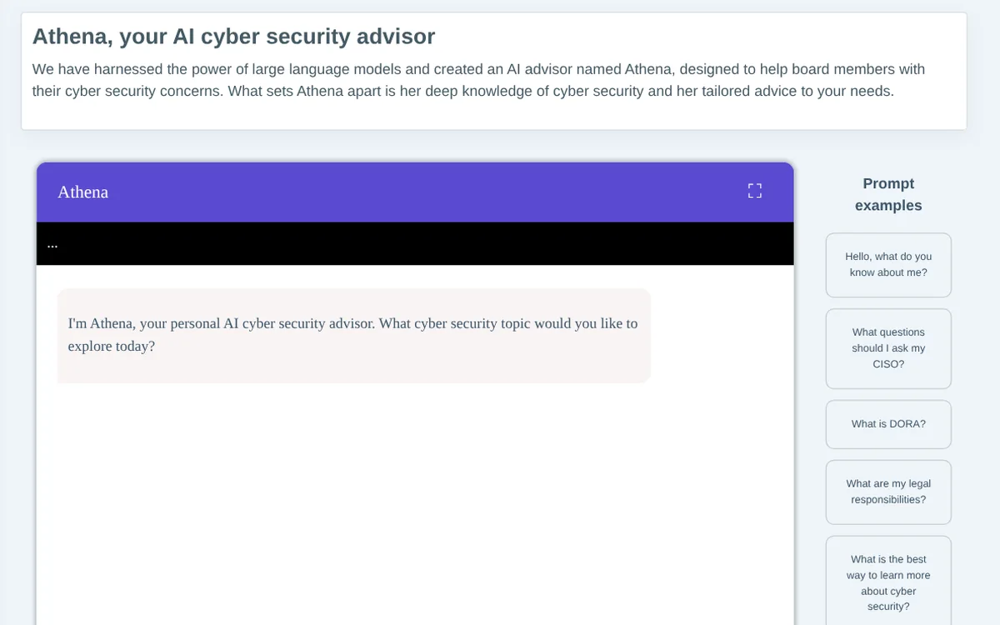

Ask Athena
“the one-stop shop that boards of directors rely on for their cyber readiness”
A director's questions, each answered from The Cyber Boardroom's own pages, with the source of every answer. The real Athena is on thecyberboardroom.com.
The conversation
“I'm Athena, your personal AI cyber security advisor. What cyber security topic would you like to explore today?” (Athena's own greeting, on its page)
What is The Cyber Boardroom, in one line?
“Welcome to The Cyber Boardroom, the one-stop shop that boards of directors rely on for their cyber readiness.”
Why should a board care?
The Cyber Boardroom is built for boards of directors. Its stated mission is “to help you understand your organisation's cyber security agenda, as well as fulfil your duties as a board member.”
At its centre is Athena, an AI advisor built on large language models to answer board members' questions about cyber security and the risks their organisation faces.
Around Athena sit curated articles and a library of 60-second videos on key cyber security topics, which frame cyber security as “a risk management conversation”, not an IT one.
The site is labelled “community edition” and “beta”. A Community Edition can be installed with pip or Docker.
What is in it for me?
Athena ↗
“Your AI cyber security advisor”, named after the Greek goddess of wisdom, courage and strategic warfare.
Curated content ↗
Articles including Cyber security in the boardroom, Incident management and The importance of digital trust.
60-second videos ↗
A library of short videos on key cyber security topics.
Board personas
CFO and CISO personas to practise the conversation from each side.
Chat with LLMs ↗
Try several large language models side by side, without a system prompt.
Community Edition ↗
Install it yourself with pip or Docker; the packages are MIT licensed on PyPI.
How does it work?
- Ask AthenaA board member asks a question; Athena, built on large language models, answers about cyber security only.
- Make it yoursBoard members personalise Athena by adding prompts in their profile.
- Choose a modelThe site works with several LLM platforms, including Groq, Mistral, OpenAI and Ollama.
- Learn in minutesCurated articles and 60-second videos cover the topics boards need.
Where has it come from?
- “Meet Athena” video.
- “The Cyber Boardroom LTD has been created”.
- SC Media UK publishes an interview with Dinis Cruz on The Cyber Boardroom.
- “Why, How, and What (v0.4, First MVP)” published.
- The Community Edition is introduced.
- Latest release of the website package on PyPI, 0.221.1.
- Latest release of the content package on PyPI, 0.9.78.
The real Athena page suggests prompts such as these:

Sources: 1, 2, 3, 4, 5, 6, 7, 8, 9, 10, 11, 12, 13, 14
Sources
Every fact on this page comes from the company's own public pages, listed here. Each section ends with the numbers of its sources. Any diagram on this page was drawn for this site from those facts.
- The Cyber Boardroom, home page read 20 November 2026
- The Cyber Boardroom, Athena read 20 November 2026
- The Cyber Boardroom, content read 20 November 2026
- The Cyber Boardroom, videos read 20 November 2026
- The Cyber Boardroom, cyber security in the boardroom read 20 November 2026
- The Cyber Boardroom, install the Community Edition read 20 November 2026
- The Cyber Boardroom, home page layout (video files) read 20 November 2026
- The Cyber Boardroom, blog posts read 20 November 2026
- SC Media UK, Interview: Dinis Cruz on The Cyber Boardroom (22 April 2024) read 20 November 2026
- PyPI, cbr-website-beta read 20 November 2026
- PyPI, cbr-content read 20 November 2026
- The Cyber Boardroom, CISO personas read 20 November 2026
- The Cyber Boardroom, chat with LLMs read 20 November 2026
- The Cyber Boardroom, Athena card read 20 November 2026